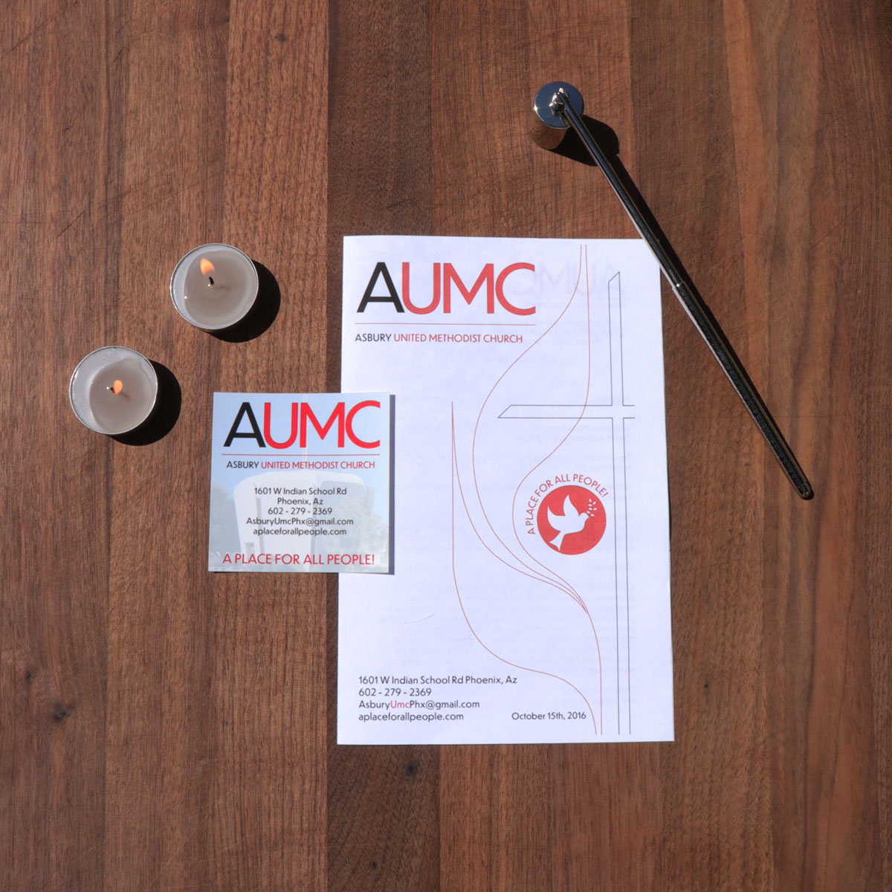

ASBURY UNITED METHODIST CHURCH IDENTITY & PRINT MATERIALS
This project involved developing a consistent visual identity for Asbury United Methodist Church, including business cards and a weekly bulletin. The color scheme, typography, and imagery align with their mission: “A Place for All People.” It was important to balance traditional symbolism with a fresh, modern feel that communicates clarity and inclusiveness.